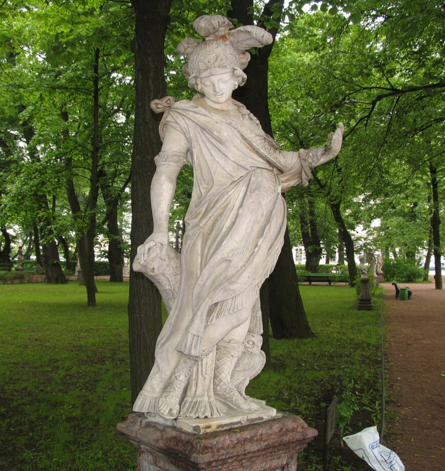
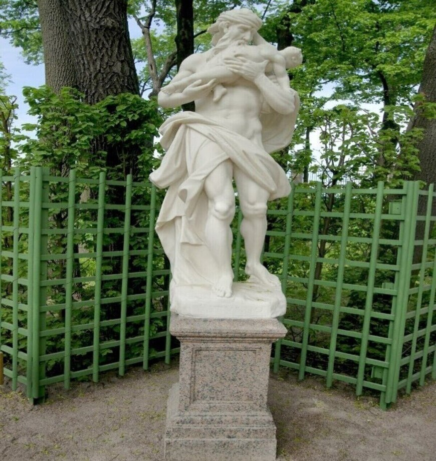
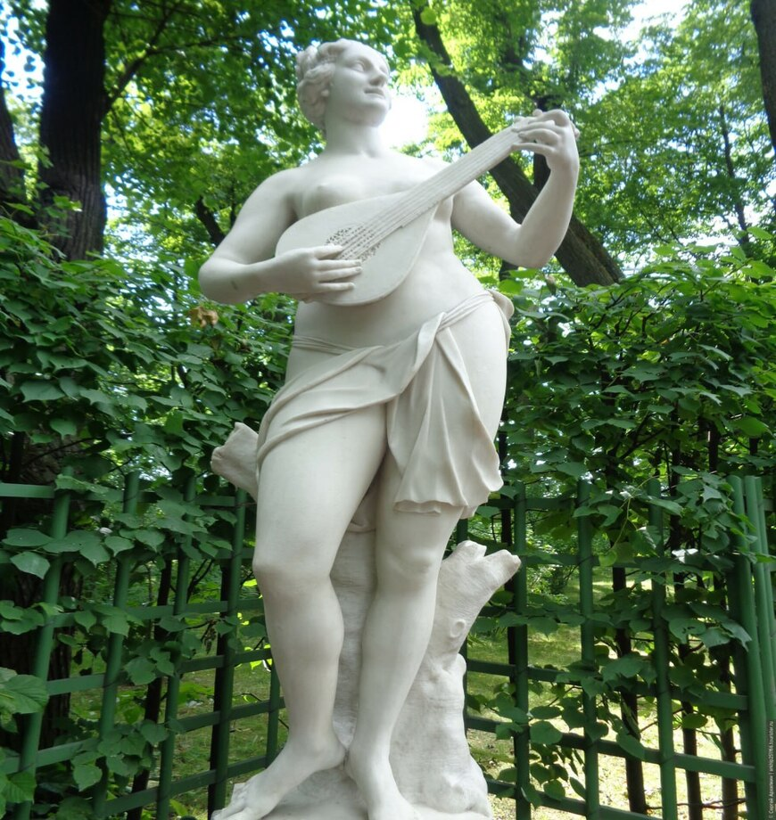
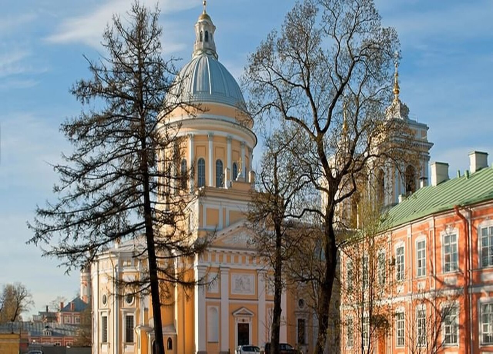

Скульптуры

Амур и Психея" - одно из наиболее интересных в художественном отношении произведений в собрании скульптуры Летнего сада. Сюжетом для него послужила поэтическая легенда о любви сына богини Венеры Амура к прекрасной девушке Психее.

Ле́тний сад — парковый ансамбль, памятник садово-паркового искусства первой трети XVIII века в Центральном районе Санкт-Петербурга. Сад был заложен по повелению Петра I в 1704 году и первоначально был регулярным.

Молодая женщина одета в доспехи с изображением Медузы, опирается на копье, у ног – сова, как символ мудрости,. Скульптура является одной из основных в коллекции Летнего сада. Изображение Минервы (Афины Паллады) почиталось Петром Великим и ее изображение помещено при входе в Летний дворец.

Монументальная группа "Мир и Победа", исполненная по специальному заказу, была привезена в Санкт-Петербург и установлена в Летнем саду в 1726 г., уже после смерти Петра I. Группа является аллегорией Ништадтского мира, утвердившего военные успехи России в борьбе со Швецией в ходе Северной войны 1700 - 1721 гг.

Сатурн — римский бог земледелия, чей культ слился с культом бога Кроноса, которому было предсказано, что он будет низвергнут одним из его детей. Поэтому Кронос проглатывал своих младенцев, и именно так в искусстве стали изображать Сатурна. С именем Сатурна связано представление о золотом веке — эпохе равенства, всеобщего изобилия и вечного мира.

Молодая женщина в звездном покрывале – «Ночь». Ее голова украшена венком из цветов мака (мак – символ сна). На нарядном поясе женщины – летучая мышь, у ног сидит сова – неизменная спутница тьмы, символ ночи.

❮
❯
Терпсихора – (в переводе с греч. «любящая танцы») муза танцев, иногда также хорового пения. Изображалась обычно с лирой в руках.
Архитектура

Изящный двухэтажный дворец "Марли" – главная достопримечательность западной части Нижнего парка. Свое имя он получил по аналогии с резиденцией французского короля Людовика XIV "Марли ле Руа", которую Петр I посетил в 1717 году.

Дворец Монплезир был местом проведения ассамблей и парадных приемов, сюда приезжали русские купцы и капитаны кораблей, здесь Петр Первый встречался со своими сподвижниками и иностранными послами.

Кунстка́мера — первый музей в России, учреждённый царём Петром I в Санкт-Петербурге . Обладает уникальной коллекцией предметов старины, раскрывающих историю и быт многих народов.

Летний дворец Петра I — одно из старейших зданий Санкт-Петербурга, он был построен в 1714 году и сохранился в своем первозданном виде до наших дней. Двухэтажный дворец предназначался только для летнего проживания, поэтому имел тонкие стены и одинарные оконные рамы.

Меншиковский дворец — известная достопримечательность Петербурга Меншиковским дворцом называется роскошная усадьба фаворита самого императора Петра Первого —Александра Меншикова. Это здание является образцом архитектуры петровского времени, выполненным в стиле барокко, а также уникальным музеем.

Эрмита́ж — парковый павильон (относится к числу так называемых эрмитажей (с фр. — «уединённый уголок»)) в стиле барокко в Екатерининском парке в Царском селе. Служил для увеселительных собраний узкого кружка придворных.

30 мая (10 июня) 1712 года был заложен каменный Петропавловский собор. Его строили таким образом, чтобы действующий деревянный храм оставался внутри новой постройки. Работой руководил швейцарский архитектор Доменико Трезини. В установке шпиля участвовал голландский мастер Харман ван Болос.

❮
❯
Тро́ицкий Алекса́ндро-Не́вский монастырь — мужской православный монастырь на восточной оконечности Невского проспекта в Санкт-Петербурге. Первый и наиболее крупный монастырь города.